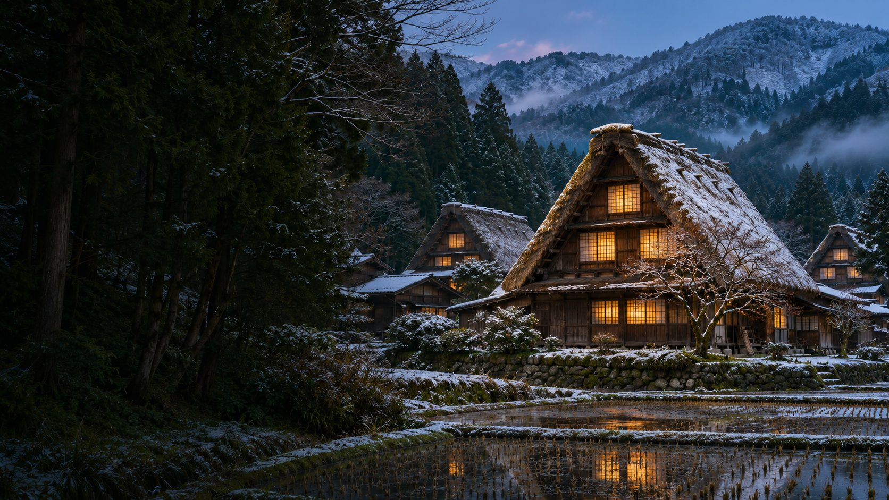

名古屋出發白川鄉、高山一日遊｜集合與回程怎麼排
住在名古屋、想同一天看合掌村與飛驒高山老街，可以選巴士一日團。先查集合點和當天行程順序。

一天怎麼安排
出發｜在名古屋集合
出發前把集合地址、地圖與憑證存到手機。預留走到集合點的時間，尤其是住處和集合點分處車站兩側時。
途中｜飛驒高山與白川鄉
高山可以把時間留給老街和用餐，白川鄉先逛合掌村周邊。想上展望台就先問導遊當天停留多久，再判斷來不來得及。
回程｜在名古屋留點空檔
冬天路況可能影響返程。如果有晚餐訂位或後段火車行程，讓集合和轉乘之間有緩衝。
雪天照常出發嗎？有供餐嗎？
這個方案餐食自理。商品頁列有大雪或道路封閉時的替代行程，景點順序和停留時間可能調整，出發前看行前通知。
KKday｜查看白川鄉與高山一日團